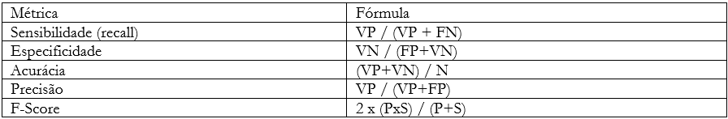

| ODS | Acurácia (%) | Sensibilidade (%) | F-Score (%) |
|---|---|---|---|
| ODS 16 | 77,5 | 85,3 | 69,9 |
| ODS 8 | 82,9 | 84,1 | 79,6 |
| ODS 10 | 91,9 | 100,0 | 30,8 |
| ODS 3 | 93,7 | 83,3 | 74,1 |
5 Abordagens e estratégias de classificação
5.1 Abordagem Multilabel
A primeira estratégia utilizada para classificação foi multilabel. Isso significa que cada processo avaliado pode ter todas as etiquetas (17 ODS) ou nenhuma delas e este tipo de classificação necessita de muitos dados. Considerando cada combinação possível de etiquetas como um rótulo individual, teríamos cerca de 131.071 etiquetas possíveis para menos de 3 mil processos avaliados pelos especialistas do tribunal, ou seja, teríamos mais categorias do que dados e isso é um enorme problema para modelos de previsão que envolvem treinamento e aprendizagem. Uma alternativa elegante para contornar este problema é dada pela utilização de modelos com probabilidade de pertencimento. Modelos deste tipo, após o treinamento, devolvem não uma coleção de etiquetas, mas uma probabilidade de cada etiqueta ser utilizada no registro que se quer prever a classificação.
Para tal tarefa, uma possibilidade é utilizar o framework StarSpace do Facebook, cuja implementação em R pode ser encontrada no pacote ruimtehol. O StarSpace é, fundamentalmente, uma máquina de gerar embeddings. Embeddings são representações vetoriais de objetos quaisquer em espaços (vetoriais) dotados de distância. No caso das palavras, bons embeddings possuem vetores parecidos para palavras de significado próximo em linguagem natural, considerando o contexto de utilização. A implementação em R do StarSpace inclui algoritmos de similaridade e redes neurais, que, no caso de problemas multilabel, geram saídas com probabilidade de pertencimento. Teoricamente, o StarSpace mostra as n etiquetas mais prováveis para um determinado texto, sendo n um número arbitrário contido no intervalo entre 1 e o total de etiquetas. Neste caso, 17. Há um extrato de código no arquivo zip chamado starspace, com um exemplo de utilização da abordagem. A abordagem até gerou bons resultados, mas esbarrou na limitação dos próprios dados e apresentou um enorme problema no ODS 16. Apesar do StarSpace produzir embeddings robustos, classificar com um único algoritmo todos os ODS se mostrou uma tarefa muito pesada para o método, principalmente nos objetivos mais gerais, como no caso do décimo sexto, relacionado à justiça, paz e instituições eficazes. Maiores informações sobre o framework podem ser encontradas em neste link.
5.2 Similaridade
A consequência natural da utilização do framework StarSpace é um estudo sobre similaridade de processos judiciais. Algumas iniciativas do judiciário utilizam similaridade para agrupar processos parecidos com diferentes propósitos, a exemplo da Berna (TJGO) e Athos (STJ). A iniciativa se ocupou de empregar similaridade com um objetivo de classificação posterior. Na prática, a RAFA calculava a similaridade entre um novo processo candidato a receber etiquetas de ODS e as peças jurídicas da base já etiquetada, com objetivo de replicar a etiqueta do processo mais parecido.
Extratos de código relacionados a atividade de similaridade estão disponíveis no notebook Python. Maiores informações sobre similaridade podem ser encontradas neste link. A continuidade desta abordagem se tornou difícil pela heterogeneidade dos textos (petições em especial) e pela falta de textos etiquetados para a maioria dos ODS. Uma forma elegante de contornar este problema envolve quebrar o problema multilabel em problemas menores binários e será melhor explicada na seção seguinte.
5.3 Abordagem binária – ODS 16, 8, 10 e 3
Quebrar o problema multilabel em problemas binários menores foi uma saída elegante que permitiu tratar cada ODS de forma individual, separando aqueles com número suficiente de processos daquelas com registros insuficientes para aprendizagem de máquina; Também permitiu ajustar um modelo para cada ODS, escolhendo os algoritmos candidatos em uma coleção maior de modelos. Como consequência de haver mais opções de modelos, surgiram também mais opções de ensemble, abordagem que reúne vários modelos e define o rótulo (etiqueta) por votação simples ou ponderada. Alguns Objetivos de Desenvolvimento Sustentável possuem poucos processos etiquetados, o que naturalmente impede que máquinas aprendam a classificá-los usando poucos exemplos. Se existem, por exemplo, 3 mil processos classificados e apenas 3 etiquetados em um determinado ODS, a máquina pode classificar nenhuma peça em tal ODS e ainda assim performar bem em termos de acurácia. Por este motivo, foram selecionados apenas os ODS 16, 8, 10 e 3, respectivamente os Objetivos de Desenvolvimento Sustentável com maiores números de entrada. Considerando cada um destes 4 ODS como um problema único de aprendizagem, a iniciativa RAFA alcançou resultados satisfatórios usando redes neurais. O fluxo de classificar processos usando a abordagem binária é o centro do projeto em R disponibilizado junto da documentação. Ao contrário da pasta zip que contém vários scripts para tarefas não conectadas e sem ordem definida, o projeto R é ponta a ponta, ou seja, começa com a leitura dos dados e termina com as classificações via redes neurais. A referência natural para usar redes neurais em linguagem R é Hvitfeldt e Silge (2021)1, livro base para o ajuste dos modelos utilizados no projeto R, cujos códigos dependem da conexão entre R e Python explicada na Seção 2.2. A iniciativa também usa redes neurais ajustadas através do pacote Pytorch, disponíveis no notebook Python.
Podem ser utilizadas diversas arquiteturas de redes para NLP, em especial RNNs e LSTM2 e existem formas diferentes de processamento inicial do texto a depender da arquitetura escolhida. A principal etapa de pré-processamento é a de embedding, que se concentra na transformação de textos em vetores de números. Máquinas não processam textos nativamente, sendo necessário um passo de codificação, para transformar coleções de palavras em conjuntos de números. Existem diversas formas de embedding, sendo as mais simples baseadas em dicionário (conjunto de todas as palavras de um texto limpo) e as mais sofisticadas baseadas em contexto. Na construção dos modelos para predição de ODS foram utilizadas as seguintes tecnologias de embedding: one-hot encoding, bag of words (BoW), TF-IDF e BERT.3
As métricas tradicionais de aprendizagem de máquina são a acurácia, sensibilidade, especificidade, precisão e F-score. O quadro abaixo apresenta cada uma e suas respectivas fórmulas:

Em que:
VP = Verdadeiros positivos;
FN = Falsos negativos;
FP = Falsos positivos;
VN = Verdadeiros negativos;
P = Precisão;
S = Sensibilidade;
N = Total de elementos.
O uso de redes neurais se justifica pela boa performance nas métricas mais importantes de aprendizagem de máquina:
Com a devida apresentação da etapa de classificação de processos em lotes, cumpre seguir com as explicações referentes ao aplicativo, desenvolvido para apoiar a atividade de classificação com poucas entradas, isto é, um processo por vez, tal qual os servidores do tribunal fazem de maneira manual. Este é o objetivo do capítulo a seguir.
HVITFELDT, E.; SILGE, J. Supervised machine learning for text analysis in R. Chapman and Hall/CRC, 2021. Disponível em: https://smltar.com/. Acesso em: 21 jul. 2022.↩︎
Detalhes disponíveis em: https://www.asimovinstitute.org/neural-network-zoo/. Acesso em: 26 jul. 2022.↩︎
Maiores informações sobre tais métodos podem ser encontradas em https://cloud.google.com/ai-platform/training/docs/algorithms/bert-start e https://www.tensorflow.org/text/guide/word_embeddings.↩︎